Flow vélo : 458 km +2885 m /
-3242 m
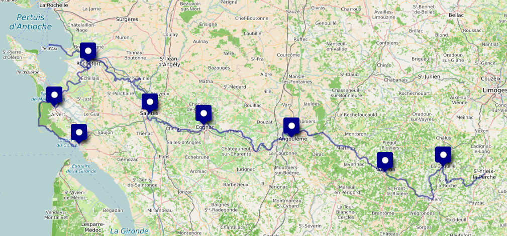
1. jeudi 14 août
: Limoges ⟶ Saint Yrieix ⟶ La Coquille
- 🚆 Limoges 12:18 - 15:00 Saint Yrieix
- 🚲 GPX
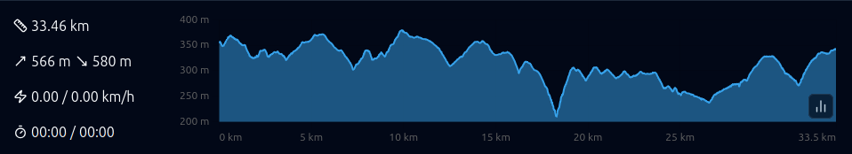
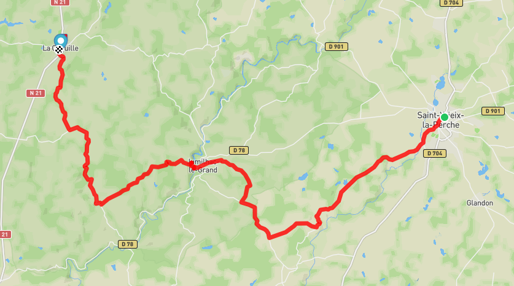
- 🏨 Le Refuge
des Pélerins, Impasse Saint-Jean, 24450 La Coquille, 05.53.52.64.25
2. vendredi 15 août : ⟶ Nontron
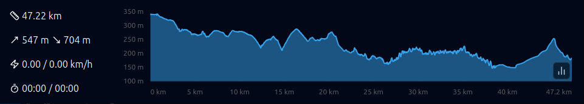
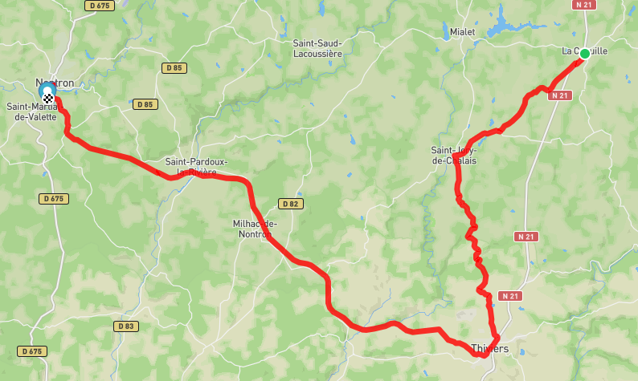
- 🏨 Camping
L’Agrion Bleu, 120 Route du stade - St Martial de Valette - 24300 -
Nontron, 05.53.56.02.04
3. samedi 16 août : ⟶ Angoulême
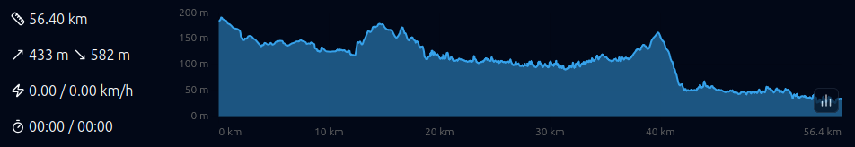
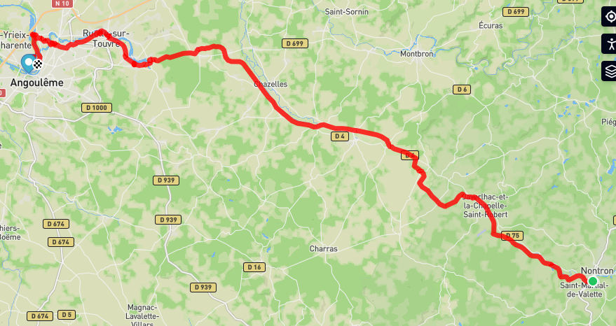
- 🏨 Appart’
City, 70, Avenue de Cognac 16000 Angoulême
4. dimanche 17 août : ⟶ Cognac
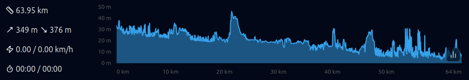
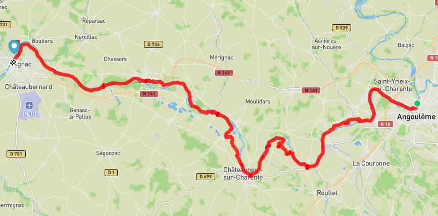
- 🏨 Sylvie,
28 rue de Boutiers, 16100 Cognac, 06.61.38.65.19
5. lundi 18 août : ⟶ Saintes
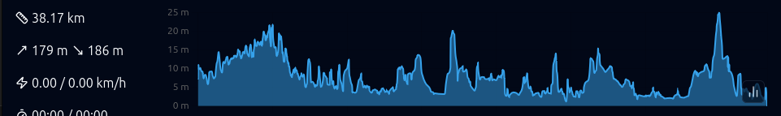
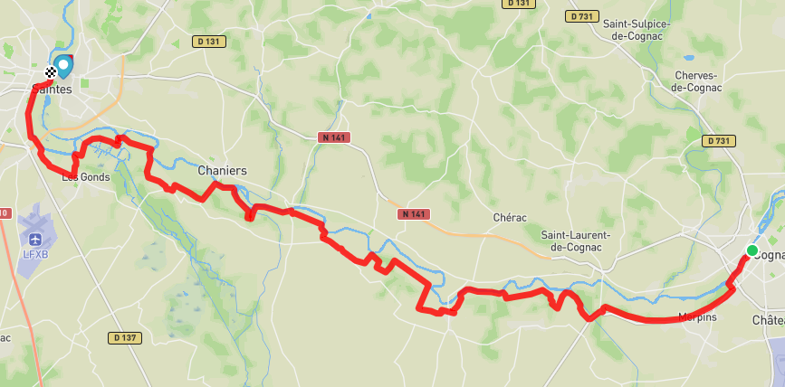
- 🏨 AJ
Saintes, 2 Place Geoffroy Martel, 17100 Saintes, 05.46.92.14.92
6. mardi 19 août : ⟶ Rochefort
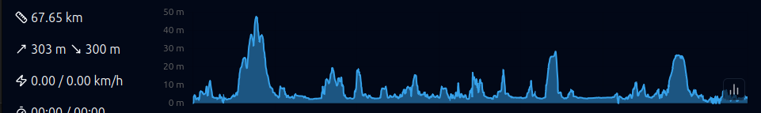
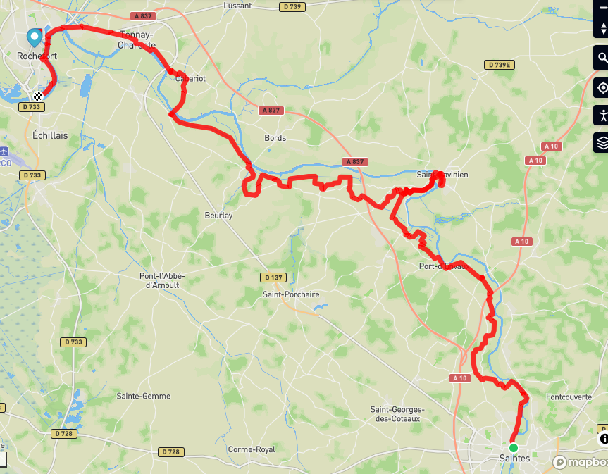
- 🏨 29, rue
Peltier, 17300 Rochefort
7. mercredi 20 août : ⟶ Ile
d’Aix ⟶ Rochefort
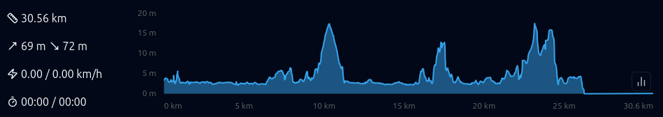
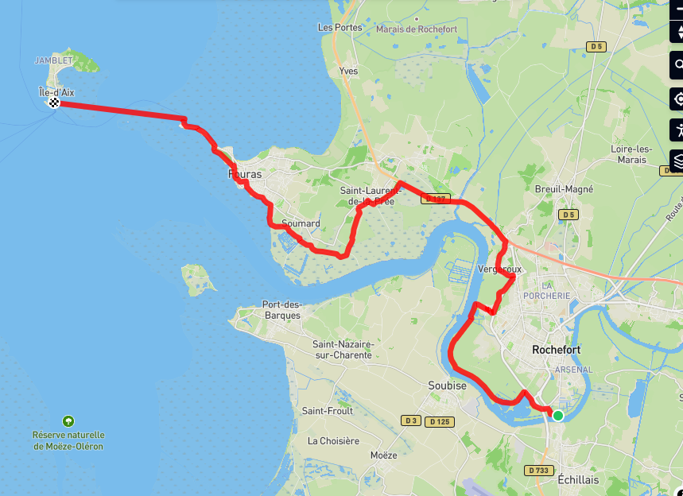
8. jeudi 21 août : ⟶ La
Tremblade
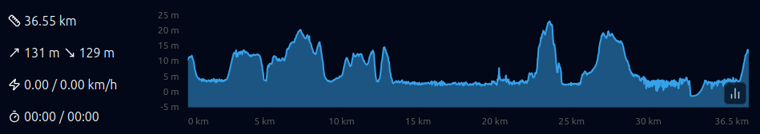
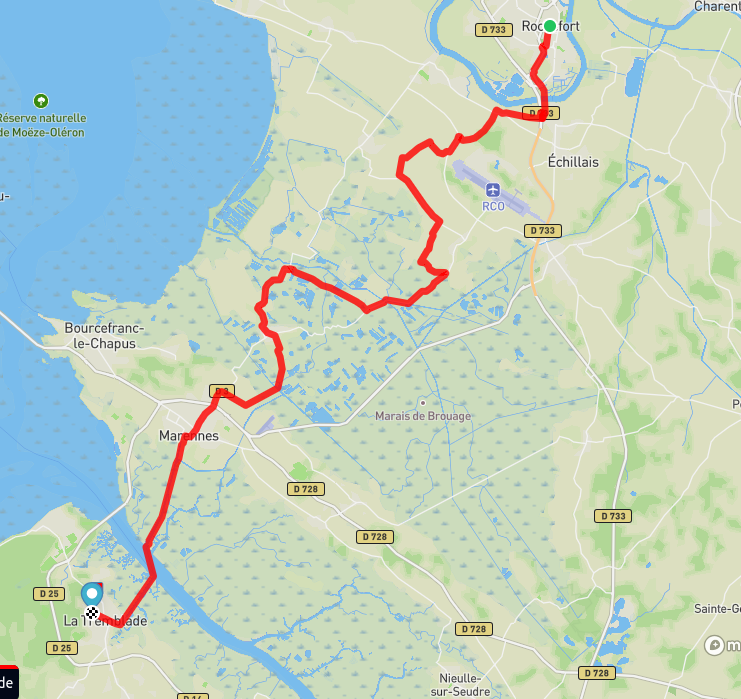
- 🏨 54, rue
de la Noue, 17390 La Tremblade
9. vendredi 22 août : ⟶ Royan
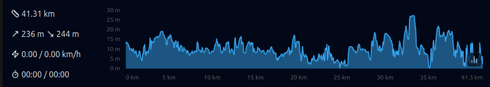
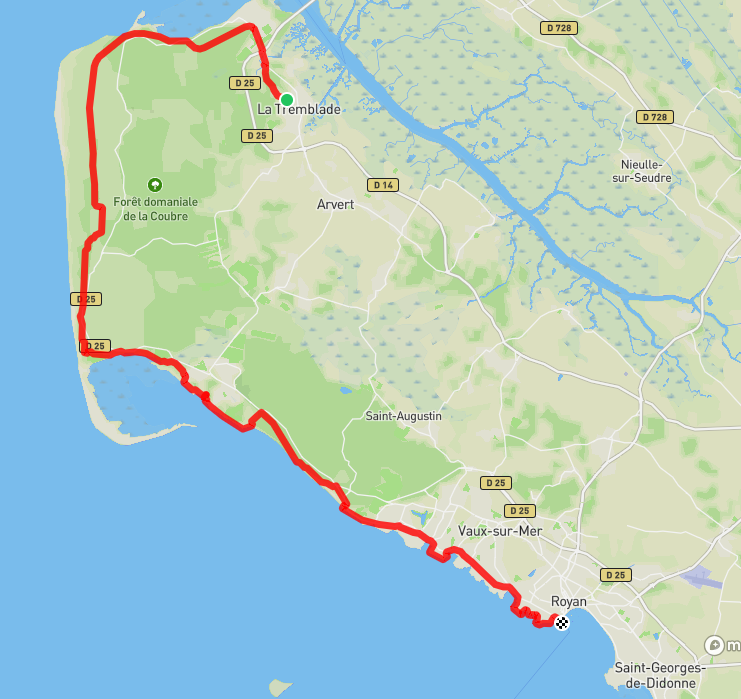
- 🏨 78
boulevard Franck Lamy, 17200 Royan
10. samedi 23 août : ⟶ Soulac ⟶
Royan
11. dimanche 24 août : ⟶ La
Rochelle
- 🚆 Royan 09:28 - 09:53 Saintes 10:06 - 11:11 La Rochelle
- 🏨 AJ,
Avenue des Minimes, 17000 La Rochelle, 05.46.44.43.11
12. lundi 25 août : ⟶ Paris
- 🚆 La Rochelle 08:48 - 12:33 Paris